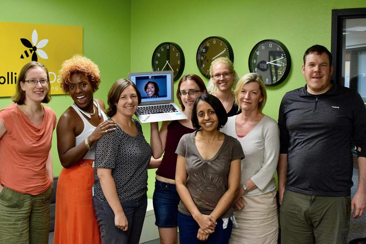
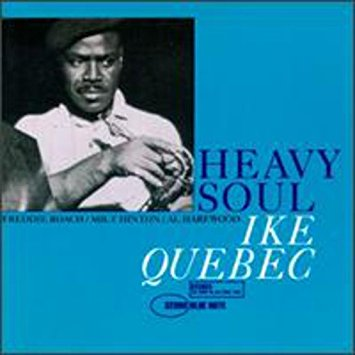

To Do:
2018-12-17: write Carpentry talk.
2018-01-01: write Carpentry talk.
2018-02-01: write! Carpentry! talk!
2018-02-19: why is this so hard???





1. Be sure you mean it.
2. Do it when others think it's time.
3. Tell people what, when, and why.
4. Leave for something.
5. Don't pick a successor by yourself.
6. Train your successor.
7. Do something fun before you go.
8. When you leave, leave.
9. Reflect on your mistakes.
10. Celebrate.


Thank you.
Start where you are.
Use what you have.
Help who you can.